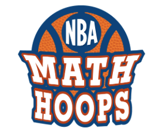
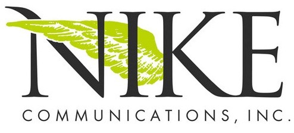
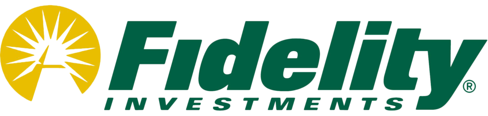

EDUCATION
AMHERST COLLEGE
Bachelor’s Degree in Law, Jurisprudence and Social Thought, May 2013
PROFESSIONAL EXPERIENCE
GLOBAL TECHNOLOGY AND OPERATIONS - PROJECT MANAGER
DENVER, COLORADO: FEBRUARY 2016 - PRESENT
- Act as a liaison between MetLife Business Operations and Application Development teams to strategically plan and implement technical initiatives using Waterfall and Agile methodologies
- Oversee projects throughout the SDLC and manage budgets ranging from 1- 3.2M
- Lead Salesforce integration for primary Annuities application to transform the Call Center experience
- Organize community outreach initiatives as a member of the Snoopy Cares Committee

NBA MATH HOOPS- REGIONAL PROGRAM COORDINATOR
February 2015- present
- Act as primary point of contact for all Denver schools and community centers participating in NBA Math Hoops
- Coordinate player appearances and build relations with local corporations to secure program exposure
LEGAL ASSISTANT
BOSTON, MASSACHUSETTS: JULY 2013- JANRUARY 2015
- Supported attorneys by drafting Motions, Complaints, and Agreements
- Lead complex research projects to prepare for trials
ENTERTAINMENT PUBLIC RELATIONS- SUMMER ASSOCIATE
NEW YORK, YEW YORK: JUNE - AUGUST 2012
- Pitched to high profile outlets, drafted media releases, and tracked daily press coverage for reports
- Helped oversee and manage the press at events at the Beacon Theatre and Radio City Music Hall
- Planned community relations events for The Garden of Dreams Foundation

TRAVEL AND LEISURE PUBLIC RELATIONS- INTERN
NEW YORK, NEW YORK: JUNE- AUGUST 2011
- Wrote press releases and achieved placements for Rosewood Hotels & Resorts, American Express Platinum Card, Miraval Arizona Resort & Spa, Cointreau, and Martini

CORPORATE SPONSORSHIP SUMMER ASSOCIATE
BOSTON, MASSACHUSETTS: JUNE- AUGUST 2010
- Coordinated ticket distribution for Fidelity-sponsored events and assisted with corporate gift program
ATHLETIC EXPERIENCE
AMHERST COLLEGE
WOMEN’S VARSITY BASKETBALL
AMHERST, MASSACHUSETTS: 2009-2013
- Team captain, 2012-2013
- Won NCAA Division III National Championship, 2011
- Participated in NCAA Division III Final Four, 2009- 2013
VOLUNTEER WORK
SKILLS
Certified Scrum Master, proficient in Spanish, Microsoft Suite, SQL, XML Schema, JSON, Fiddler, and Clarity Forecasting